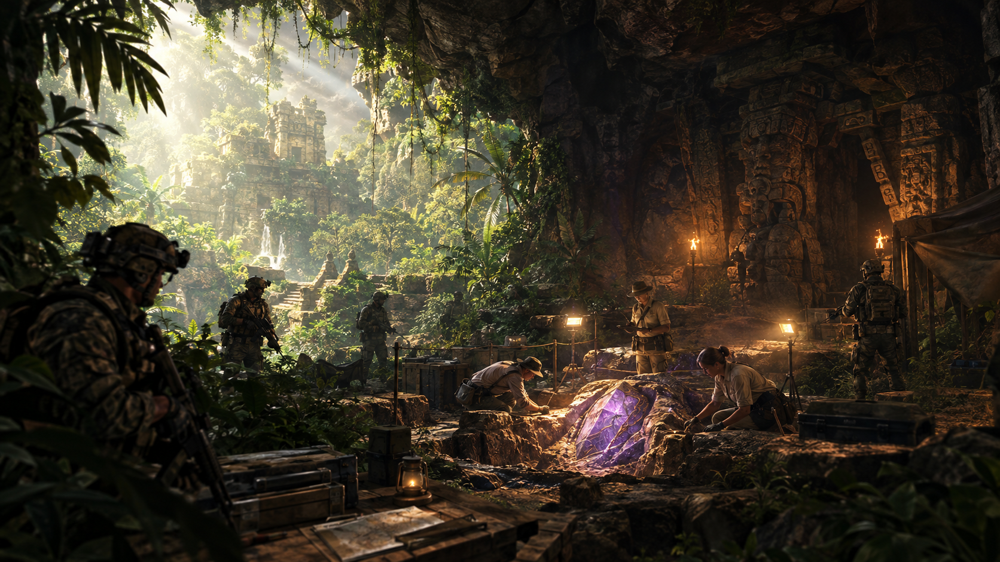

The story
Years after the events of Shangri-La, an archaeological team excavating the ruins of the hidden jungle temple uncovers a strange glowing purple crystal buried in the rubble. It's a leftover shard of the Element 115 meteor, but nobody on the team knows that. To them, it's an unidentified mineral that gives off a faint, steady energy.

The discovery makes headlines around the world, and the media starts calling it a "healing stone." The shard is shipped to a natural history museum, which plans a grand public unveiling.
One group does know what the crystal really is: a secret organization that has been tracking Element 115 for years. Its operatives were already at the dig, posing as site security. When the crystal moves to the museum, the organization quietly places the same team inside the museum's security detail for the unveiling, with orders to protect the shard and keep it out of the wrong hands. The players are that team.
On unveiling night, with the museum packed with guests, something goes wrong in the research lab. A piece of equipment malfunctions and fires straight into the shard. Nothing seems to happen at first. But the Element 115 has been supercharged, and its energy spreads through the museum, waking up every fossil and skeleton in the building. Bone grows flesh again, the exhibits start to move, and the guests begin to turn.
The team knows exactly what this means. Rather than let the outbreak reach the city, they seal the museum from the inside, locking themselves in with it. Their only way out is to fight through to the lab and destroy the shard.
Zombies fans will recognize the glowing crystal the moment they see it. The scientists and guests have no idea what they've brought inside, but the players and their team do. That gap is what makes the opening tense.
Map layout
Players fight their way from the museum entrance to the lab where it all started. The four main rooms form the main path, and each one introduces a bigger, more dangerous threat. As in any Zombies map, players buy doors with points to open new areas. Side rooms branch off the main path for perks, the Mystery Box, and quest items, and loops let players circle the map instead of getting trapped in a dead end.
- Entrance Hall. The starting room. Human skeletons from the anthropology exhibits have been reanimated as zombies. A side door leads to the Security Office.
- Raptor Gallery. A bigger hall where raptors burst out of their displays. They are faster than zombies and attack in packs. Above them, pterosaur skeletons hang from the ceiling on display wires. In later rounds they tear free and dive at players from above, so players have to watch the ground and the air at the same time. Side rooms: the Gift Shop and the Fossil Prep Room.
- Great Hall. The museum's centerpiece room, home to a towering T. rex skeleton, with the Planetarium off to one side. An upper balcony loops all the way around the T. rex, so players can keep moving during the boss fight. This is where the T. rex comes to life, with raptors attacking alongside it.
- Research Lab. The source of the outbreak, where the supercharged shard is kept. It stays sealed until players have defeated the T. rex, which makes it the finale.

The main quest
The main quest runs alongside the rounds. Players gather three pieces of technology, each guarded by a different puzzle, assemble them into a weapon, use it to bring down the T. rex, and finally destroy the shard.
Step 1 · The security feeds Entrance Hall → Security Office
The first piece is locked inside one of the museum's display cases, but the outbreak knocked out the power. Players restore power to the Security Office, then watch the camera feeds to spot which exhibit case is glowing. They have to remember it, run back out into the horde, and open the right case.
Step 2 · Cut the wires Raptor Gallery
The second piece is caught on a pterosaur skeleton that is still hanging from the ceiling. Players shoot through its display wires to bring it crashing down and grab the piece. The fall wakes the pterosaur, so the reward comes with a new threat diving at them from above.
Step 3 · Align the stars Planetarium
Players switch on the planetarium projector and rotate the night sky until the constellations line up with symbols carved into the Shangri-La temple, which players can spot on the photos and replicas in the unveiling exhibit. When the stars match, a hidden panel opens with the final piece. It rewards players who paid attention to the museum around them.
Step 4 · Build the Carbon Dater Fossil Prep Room
Players bring all three pieces to the workbench in the Fossil Prep Room and use the museum's equipment to assemble the Carbon Dater. Instead of measuring a fossil's age, it forces it back: anything it hits is reduced to its original bones.
Step 5 · Bring down the T. rex Great Hall · boss fight
- Phase 1: Weak spots. The T. rex wakes up in the Great Hall. Players run the balcony loop around it, shooting the glowing purple weak spots on its ribs while raptors chase them.
- Phase 2: The chandelier. Once enraged, the T. rex is too strong to fight head-on. Players have to lure it under the giant chandelier and drop it to stun it.
- Phase 3: Back to bone. While the T. rex is stunned, players blast it with the Carbon Dater, turning it back into a skeleton. With the guardian down, the Research Lab finally unseals.
Step 6 · Destroy the shard Research Lab · finale
Players push into the lab and destroy the shard with the Carbon Dater. Its energy cuts out instantly, and every creature that came back to life collapses into bones in front of them.
Reward
Players keep the Carbon Dater for the rest of the game.
Hidden story
Audio logs and lab notes hidden around the museum let players piece together what happened. In one, a scientist records that the crystal's readings "match nothing on the periodic table." It's a nod for longtime fans, who know exactly what that means.
Design notes
- Escalating threat. Each room introduces a new kind of enemy: slow zombies, then fast raptors in packs, then attacks from above, then a giant boss. Players learn each threat before the next one is layered on top.
- Using the whole space. Museums really do hang flying reptiles from their ceilings. Waking them up turns the room's height into a threat, so players can't just watch the doors.
- A setting that tells the story. A museum already has its enemies on display. Players walk past the skeletons and fossils before they wake up, so the danger is visible from the start.
- Built on existing lore. Element 115 is what reanimates the dead in Zombies, so the outbreak needs no new explanation. Linking it to Shangri-La rewards longtime players for spotting the connection.
- Room to move. The side rooms and the balcony loop keep the map from being a straight corridor, so players always have a way to circle around a horde.
- A reason to stay and fight. The players seal themselves in on purpose, so the locked doors and the push toward the lab come from the story, not just the rules of the mode. It also explains why they know how to build the Carbon Dater.
- Every puzzle uses the museum. Security cameras, hanging skeletons, and a planetarium are all things a real museum has, so each step feels like part of the place rather than a puzzle dropped into it.
- Puzzles that test different skills. The security feeds test memory under pressure, the wires test aim, and the star map tests observation. The T. rex then brings them together: aim, positioning, and teamwork to lure it under the chandelier.
- A satisfying ending. Destroying the shard turns every living exhibit back into bones at once, the same effect the Carbon Dater has had on each enemy, now on the whole museum. It's a clear, visual payoff that tells players they won.